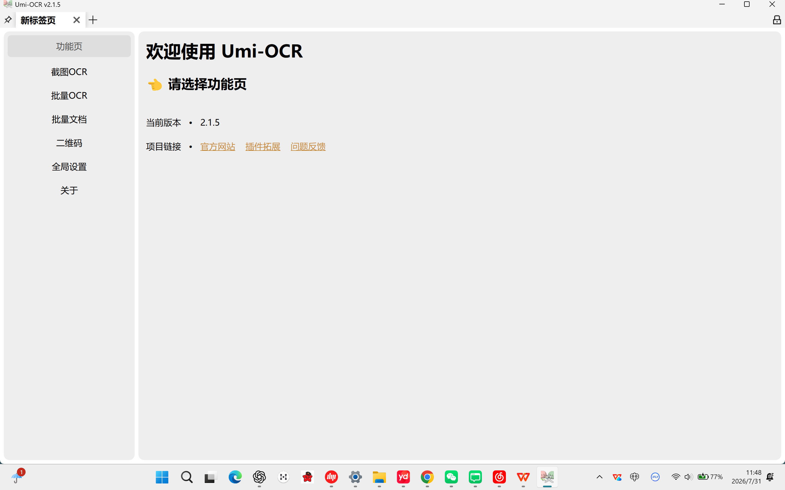
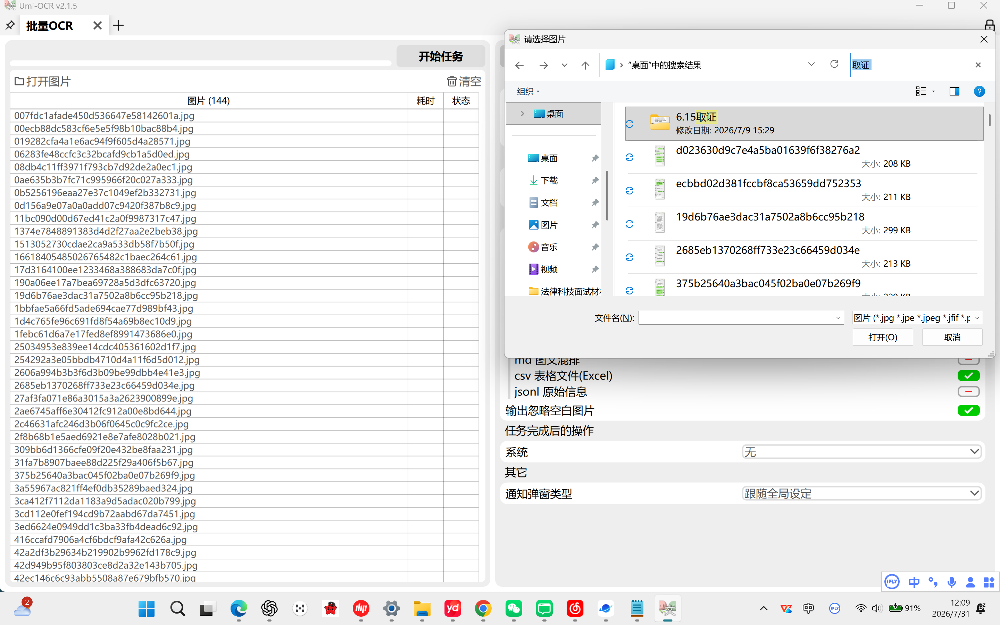
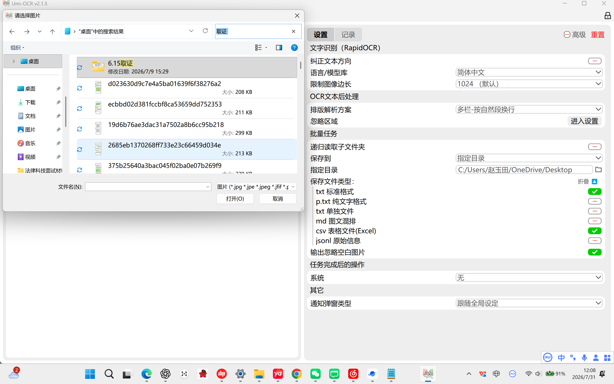
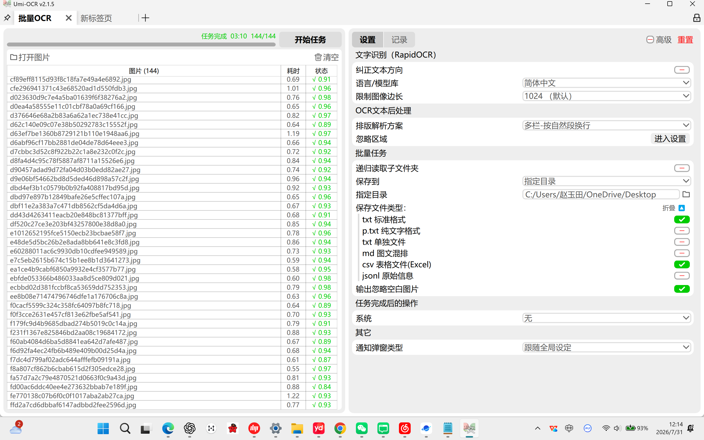
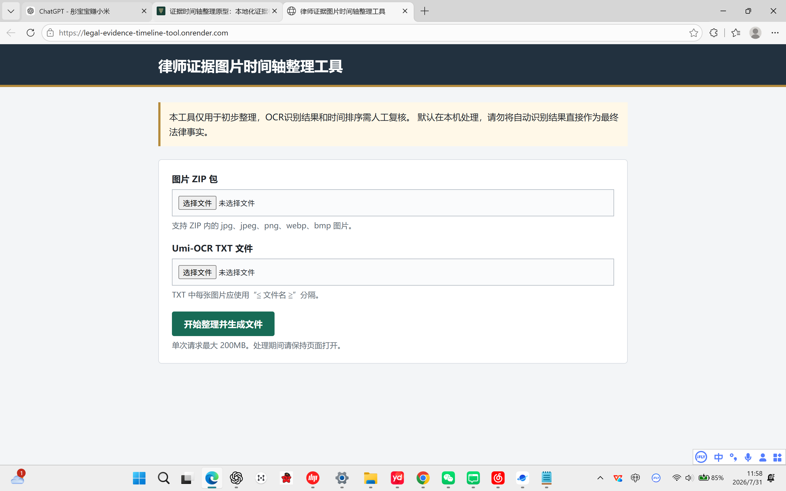
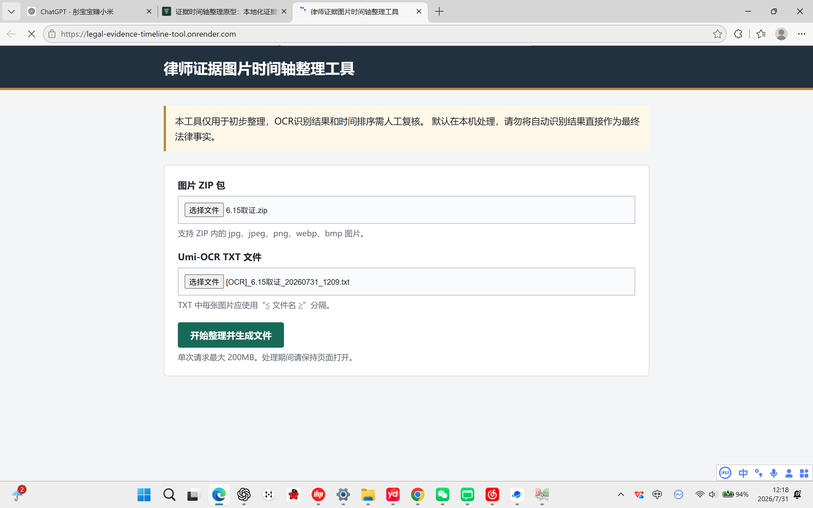
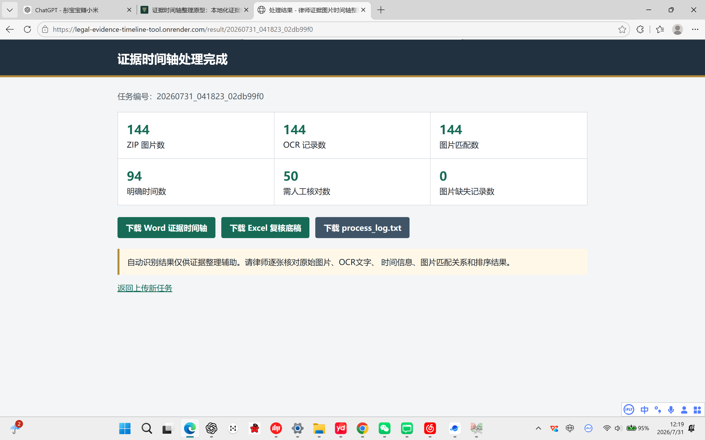
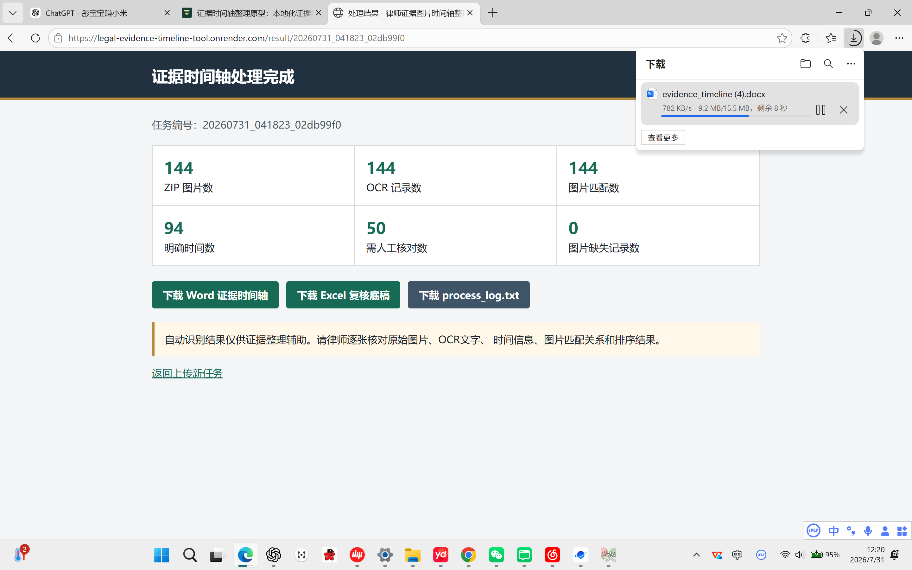

当前教程使用 2026 年 7 月 31 日整理出的现有截图素材。图片中如包含本地路径、任务编号、浏览器标签页或案件文件名，正式发布前建议先裁剪或脱敏。
工具入口
1. 打开 Umi-OCR
在 Windows 桌面找到 Umi-OCR 图标，双击打开软件。

2. 进入 Umi-OCR 首页
软件打开后会进入 Umi-OCR 首页。左侧功能栏中可以看到“截图OCR”“批量OCR”“批量文档”等功能。

3. 进入“批量OCR”并导入图片
点击左侧的“批量OCR”，进入批量识别页面。可以直接将装有证据图片的文件包或图片文件夹拖入图片列表区域，也可以点击“打开图片”手动选择需要整理的证据图片。本示例中共导入 144 张图片。

4. 设置 TXT 标准格式和保存目录
在右侧设置区确认输出格式。建议勾选 txt 标准格式，并设置结果保存目录，方便后续上传到网页工具。

5. 开始 OCR 并等待任务完成
点击“开始任务”后等待识别完成。任务完成后，页面顶部会显示完成进度。本示例显示 任务完成 144/144。

6. 打开证据时间轴网页上传页面
在浏览器中打开“律师证据图片时间轴整理工具”。页面需要上传图片 ZIP 包和 Umi-OCR 生成的 TXT 文件。

7. 上传 ZIP 和 TXT 文件
分别点击两个“选择文件”按钮，选择图片 ZIP 包和 Umi-OCR 的 TXT 结果文件。确认两个文件都已显示在页面上后，点击“开始整理并生成文件”。

8. 查看处理结果并下载 Word
网页处理完成后，会显示图片数、OCR 记录数、图片匹配数、明确时间数、需人工核对数等统计信息。点击“下载 Word 证据时间轴”下载生成的 Word 文件。

9. 在浏览器下载面板确认文件下载
点击下载后，可以在浏览器右上角下载面板查看 Word 文件的下载进度。下载完成后，即可打开 Word 版证据时间轴进行人工复核。

发布前检查
- 桌面截图建议裁剪，只保留 Umi-OCR 图标和必要操作区域。
- Umi-OCR 设置页中的 Windows 用户名、本地完整路径、案件文件夹名建议脱敏。
- 网页结果页中的任务编号、URL、浏览器标签页建议按发布场景决定是否遮挡。
- 涉及真实案件名称、联系人、账号、电话、邮箱的内容不应直接发布。